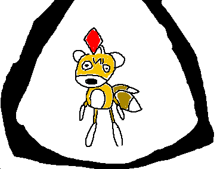

If you on the internet on the earlier side of the 2010's, you've probably seen this thing in some poorly written
creepypasta somewhere. It's the Tails Doll, owned by SEGA, and as far as I'm aware it has only made two
appearances ever in the games, about twenty six years apart from eachother. Firstly it's orignal game, Sonic R,
as an unlockable racer, and recently Sonic Superstars, as an easter egg.
I wouldn't reconmend looking Tails Doll up if you're adverse to blood, because many of those creepypasta images
are still around, and in the young internet days what counted as a creepy version of something amounted to
covering it in blood and giving it red a glowy eyes.
Right, so about this weird creepy doll, why is it called the Tails Doll? Well it's supposed to be Tails
equivelant to metal sonic in Sonic R, and if you don't know who Tails is, Tails is the sidekick character that's
been in the series since Sonic 2 which was released in 1992. But I didn't want to write about a history lesson
today, I want to speculate on what it can even do.
The great part about sonic being a multimedia franchise rather than a stand alone game, it means there's more
than just the mainline games. Such as the comics which 85% or something of which aren't canon. Great fun!
Partially ignoring
the archie comics where they turn play way too hard into the creepypasta part of it's fame and turn the Tails
Doll into some foul looking monster, the later iteration of the doll in that series it turned into more of a
hacking infiltrator, but the archie comics are discontinued and won't ever be actually canon.
Therefore, Tails Doll's only canon appearance where it does something other than float around ominously is in
the 30th year special comic where it just spies on people and generally acts like a creep. That's it. That's all
it does. Other than float around either to race or just be there existing, that's all it does.
But what if, oh what if Tails Doll actually was actually built to match Tails capabilities like Metal Sonic to Sonic, not to match the abilities but to surpass them? Tails Doll could be the superior hacker of the two, like in the defunct Archie canon, that and other technology manipulating advantages. How would that work in an actual gameplay setting? I wouldn't know. Maybe I just want to see this creepy obscure thing more, even though the only actual sonic game I've played was like the first couple levels of Sonic Colors.